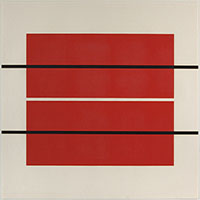
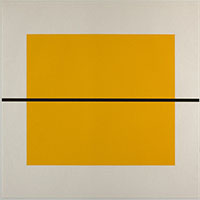
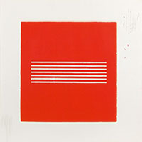

Donald Judd
14 de marzo de 10.00h a 14.00h
Trayectoria
Su trayectoria artística pasó de una primera etapa como pintor abstracto de composiciones geométricas bastante austeras a una segunda etapa como crítico de arte (durante los años cincuenta) y a una tercera como escultor, desde comienzos de la década de 1960.
Obra
Donald Judd utilizó la madera en sus primeras realizaciones, pero pronto incorporó el plexiglás y el acero inoxidable, su material más característico.Todas sus creaciones son obras frías, carentes de cualquier intención decorativa o implicación emocional, en las que a menudo utiliza el color para de esta manera acentuar la estructura de las piezas.
Programación
Conferencia en homenaje a su vida y obra
Exposición de sus trabajos
Subasta
Obras en subasta


